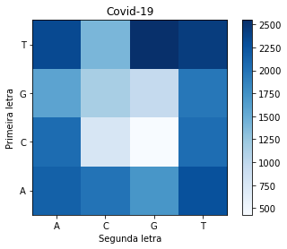
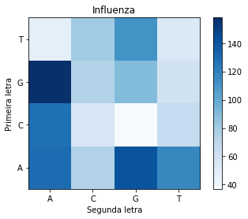

Comparação de genomas
Enunciado
Pretende-se comparar duas sequências de DNA: SARS-CoV-2 identificado na cidade de Wuhan (China) e o Virus da Influenza A identificado na California (US).
O DNA é uma molécula presente em todos os seres vivos, que é responsável por armazenar as caracterı́sticas hereditárias. Ela é composta por sequências de nucleotı́deos, que podem ser de quatro tipos: Adenina (A), Timina (T), Citosina (C) ou Guanina (G).
Neste estudo de caso, queremos avaliar se estruturas com funções parecidas de organismos diferentes têm diferenças. Para isso vamos avaliar a quantidade de pares de nucleotı́deos.
Os dados utilizados para este estudo referem-se a sequências de DNA disponı́veis nos seguintes links: SARS-CoV-2 Wuhan-Hu-1 e Virus da Influenza A (California/07/2009(H1N1)).
Para comparar as duas estruturas requere-se um mapa de calor (Heatmap) que permita realizar a comparação dos pares de nucleotı́deos. Comente sobre os resultados encontrados.
Desenvolvimento
Para desenvolvermos o que foi enunciado acima utilizaremos o pacote reticulate que nos permite utilizar o python no RStudio. Dessa forma veremos abaixo que alguns dos pacotes não estarão sendo importados com o import matplotlib.pyplot as plt, por não ser necessário a sua importação, mas no decorrer do código será utilizado.
import numpy as npcovid = open('sequence_covid.txt').read()
influenza = open('sequence_influenza.txt').read()ref_covid = {
'AA': covid.count('AA'),
'AT': covid.count('AT'),
'AC': covid.count('AC'),
'AG': covid.count('AG'),
'TT': covid.count('TT'),
'TC': covid.count('TC'),
'TG': covid.count('TG'),
'TA': covid.count('TA'),
'CC': covid.count('CC'),
'CA': covid.count('CA'),
'CG': covid.count('CG'),
'CT': covid.count('CT'),
'GG': covid.count('GG'),
'GA': covid.count('GA'),
'GC': covid.count('GC'),
'GT': covid.count('GT'),
}
print(ref_covid){'AA': 2144, 'AT': 2276, 'AC': 1999, 'AG': 1711, 'TT': 2439, 'TC': 1407, 'TG': 2549, 'TA': 2338, 'CC': 770, 'CA': 2053, 'CG': 427, 'CT': 2049, 'GG': 958, 'GA': 1586, 'GC': 1153, 'GT': 1962}val_covid = [ref_covid['AA'], ref_covid['AC'], ref_covid['AG'], ref_covid['AT'], ref_covid['CA'], ref_covid['CC'], ref_covid['CG'], ref_covid['CT'], ref_covid['GA'], ref_covid['GC'], ref_covid['GG'], ref_covid['GT'], ref_covid['TA'], ref_covid['TC'], ref_covid['TG'], ref_covid['TT']]
matriz_covid = np.array(val_covid).reshape(4, 4)
print(matriz_covid)[[2144 1999 1711 2276]
[2053 770 427 2049]
[1586 1153 958 1962]
[2338 1407 2549 2439]]plt.imshow(matriz_covid, cmap = 'Blues', origin="lower")
plt.xlabel('Segunda letra'); plt.ylabel('Primeira letra')
plt.xticks((0,1,2,3),['A','C','G','T'])
plt.yticks([3, 2, 1, 0],['T','G','C','A'])
plt.title("Covid-19")
_ = plt.colorbar()
ref_inf = {
'AA': influenza.count('AA'),
'AT': influenza.count('AT'),
'AC': influenza.count('AC'),
'AG': influenza.count('AG'),
'TT': influenza.count('TT'),
'TC': influenza.count('TC'),
'TG': influenza.count('TG'),
'TA': influenza.count('TA'),
'CC': influenza.count('CC'),
'CA': influenza.count('CA'),
'CG': influenza.count('CG'),
'CT': influenza.count('CT'),
'GG': influenza.count('GG'),
'GA': influenza.count('GA'),
'GC': influenza.count('GC'),
'GT': influenza.count('GT'),
}
print(ref_inf){'AA': 130, 'AT': 117, 'AC': 75, 'AG': 141, 'TT': 54, 'TC': 81, 'TG': 112, 'TA': 48, 'CC': 56, 'CA': 128, 'CG': 37, 'CT': 67, 'GG': 90, 'GA': 158, 'GC': 75, 'GT': 61}val_inf = [ref_inf['AA'], ref_inf['AC'], ref_inf['AG'], ref_inf['AT'], ref_inf['CA'], ref_inf['CC'], ref_inf['CG'], ref_inf['CT'], ref_inf['GA'], ref_inf['GC'], ref_inf['GG'], ref_inf['GT'], ref_inf['TA'], ref_inf['TC'], ref_inf['TG'], ref_inf['TT']]
matriz_inf = np.array(val_inf).reshape(4, 4)
print(matriz_inf)[[130 75 141 117]
[128 56 37 67]
[158 75 90 61]
[ 48 81 112 54]]plt.imshow(matriz_inf, cmap = 'Blues', origin="lower")
plt.xlabel('Segunda letra'); plt.ylabel('Primeira letra')
plt.xticks((0,1,2,3),['A','C','G','T'])
plt.yticks([3, 2, 1, 0],['T','G','C','A'])
plt.title("Covid-19")
_ = plt.colorbar()